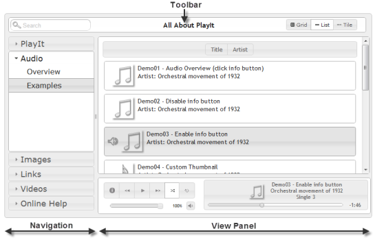
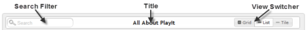
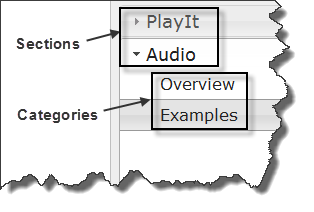
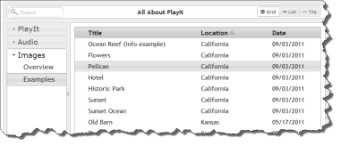
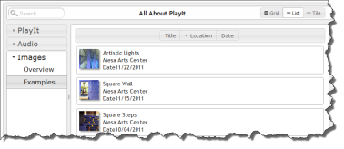
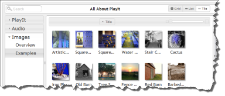
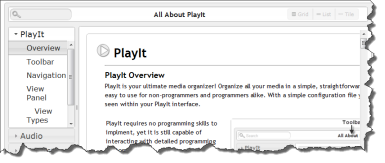
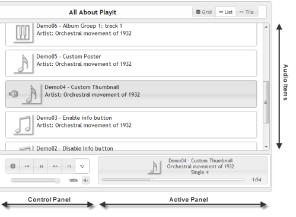
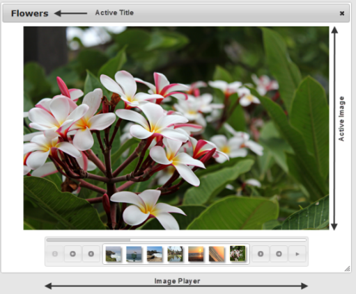
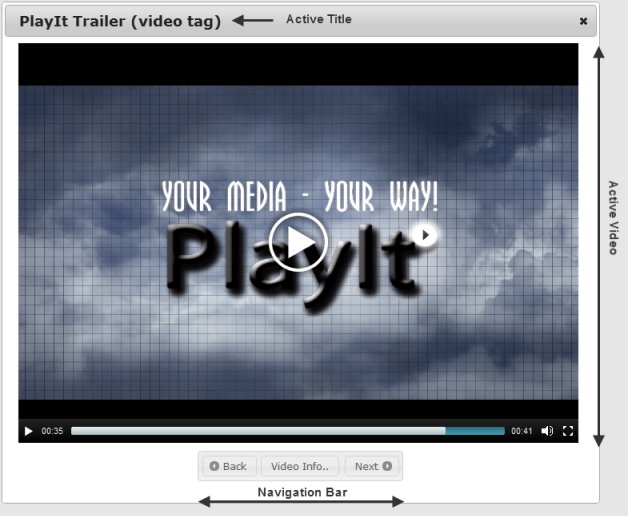

PlayIt
PlayIt
PlayIt Overview
PlayIt is your ultimate media organizer! Organize all your media in a simple, straightforward and easy to use interface. PlayIt is easy to use for non-programmers and programmers alike. With a simple configuration file you are in control of all aspects of what is seen within your PlayIt interface. This walkthrough will show all the various features and parts of PlayIt. To get the technical specification please visit the online documentation.|
PlayIt requires no programming skills to implement, yet it is still capable of interacting with detailed programming customizations. Edit the configuration file directly or create your own web service to serve up XML or JSON formatted responses to drive a completely dynamic PlayIt system. PlayIt is laid out with a toolbar, navigation menu and active view panel. The view panel currently supports four different views which are grid, list, tile and link (any webpage). |

Figure 1-0
PlayIt Layout |
Toolbar
The toolbar contains the search filter, title and view switcher. The search filter can be shown or hidden and the search filter hint text can be easily edited. The view switcher is highly customizable and each button itself can be shown, hidden or automatically selected based on the current category.The toolbars search filter and view switcher are automatically disabled when the current view is a category that points directly to a link or web assest.

Figure 1-1
Toolbar Layout
Toolbar Layout
Navigation
|
The navigation menu can be configured to have several sections and an unlimited number of categories per section.

Figure 1-2
Sections/Categories Sections are the highest level of organization in PlayIt and contain categories that contain media file types like audio, links, images and videos. A quick example will explain the basics and show this navigations layout in figure 1-3. |
<playit> <section name="PlayIt" > <category type="link" name="Overview" link-src="url.html"> <category type="link" name="Toolbar" link-src="url.html"> ... </section> <section name="Audio" > <category type="link" name="Overview" link-src="url.html"> <category type="audio" name="Examples"> <grid enable="true"> ... <audio title="... > <audio title="... > ... <category> </section> </playit> Figure 1-3 Sample XML |
|
Categories themselves can link directly to any web page, web site, video, image, pdf or anything your browser can render. All <category> tags require
an attribute called 'type' which supports any of the following values 'audio,image,link,video'. When a category type is defined then it must contain only
its corresponding type. For example if category@type="video" is set, then that categoires child data tags can only be of type <video>. Categories set with type "link" and category@link-src="http://yoururl" will ignore all child tags and point directly to the url source. |
|
View Panel
The view panel is the final drill down of a specific category. Depending on what type of category data (audio, image, video, link) is available the view panel will output your results in a grid, list, tile or link (iframe) format. Below are the four view types.|

Figure 1-4
Grid View |

Figure 1-5
List View |
|

Figure 1-6
Tile View |

Figure 1-7
Link View |
Category Views
grid, list, tile & linkCategories can contain the following elements for configuring each of the view types <grid>, <list> <tile>
The grid in figure 1-4 is displayed in a table layout. Each column in the table can be organized and displayed in any order you want. Hover over any row and select the item you want to play. Enable which item you want to sort by default and it's order.
The list view in figure 1-5 also allows for dynamic display elements for every item. You can also choose which displayable field you would like to be able to sort on.
The tile view in figure 1-6 allows you to see the category data item from an image standpoint. Just assign your item an image and it will be seen as a clickable image element. For audio data types you have the ability to group by album if you want.
The last view type is the link in figure 1-7. The link view is set directly on the category and can display pretty much whatever URL you want to provide. The link view does not showup as a view switcher button because it is tied directly to a category and provides the view panel with a direct link to any URL.
Category Data Types
audio, image, link, & videoCategories can contain many but only one type of the following elements for configuring: <audio>, <img>, <link>, <video>. Each data type will have its own functionality and provide the correct mechanism for playing your audio file, displaying images, watching videos, and linking to URLs.
|
Custom Data Element Attributes Every data type comes with built in attributes used to help it function; however, adding your own custom attribute or meta data to any data element is very easy. For example you can easily add a custom attribute to the <image> tag called 'my-location' and then be able to view or sort on 'my-location' in the grid or list views. Add as many custom fields as you need and display only the ones you want. |
<category type="image" name="My Pictures">
<grid> <fields sortcolumn="title" > <field match="title" display="Name" /> <field match="my-location" display="Location" /> ... </fields> </grid> <image tile="My Vacation" my-location="France" ... Figure 1-8 Custom Data |
Audio
Audio Overview
With the audio element you can organize everything from podcasts, voice recordings, and sound bytes to music of any genre. The <audio> tag is what drives the audio view and allows you to play all your audio files. Click on the information button in the audio example section with items marked ** to see a high level detail of various settings.

Figure 2-0
Audio Layout
Audio Layout
The "Audio Player" consists of both the "Control Panel" and "Active Panel" and will always be visible in the current view panel when a category type is 'audio'. The "Audio Player" has the following functions:
| Action | Overview |
| Info Box Button | A dialog with your custom html (use <info> tags) |
| Back/Forward Button | Move back or forward between audio files |
| Play/Pause Button | Start or stop the active audio file |
| Shuffle Button | Shuffles all audio files in the current view |
| Loop Button | Loops the current audio file |
| Mute Button | Mute the current audio file |
| Volume Slider | Adjust the volume of the current audio file |
| Progress Slider | Change the current time frame of the active audio file |
Images
Images Overview
With the image element you can organize all your pictures and images into a simple interface. Image items are all linkable from the grid, list and tile views. When an image is selected a dialog window is opened with the selected image as the active image. The image player then allows for view of other images within the currently selected category.

Figure 3-0
Image Layout
Image Layout
The image player also allows for a slideshow of all your pictures. Below is a table of all the options that are available within the image player.
| Action | Overview |
| Info Box Button | Place your custom html (use <info> tags) for your images. This will toggle the active image. |
| Back/Forward Group Button | Move back or forward for all items in a group |
| Back/Forward Image Button | Move back or forward per image |
| Play/Pause Button | Start or stop the slideshow |
| Progress Bar | While the slideshow is enabled the progress shows the time for each slide |
Links
Links Overview
With the link element you can provide an easy link portal for all your important bookmarks and URLs. While the link element is available as a data element it is also available on the category attribute add-on with the attribute 'link-src'.
Link directly from a category with the following XML
<category type="link" name="My Link" link-src="myurl.html">
<category type="link" name="My Link" link-src="myurl.html">
Figure 4-0 Category Linking
Videos
Videos Overview
With the video element you can provide access to many of the major video hosting services and your own self hosted videos. Integrate easily with services like youtube, vimeo, blimp-tv and several others. Create our own video library with sources from just about anywhere.

Figure 3-0
Image Layout
Image Layout
| Action | Overview |
| Video Info Button | Place your custom html (use <info> tags) for each video. This will toggle the video. |
| Back/Forward Buttons | Move back or forward each video |
Acknowledgments
MUSIC CREDITS:
BY: The Orchestral Movement of 1932
SOURCE: http://opsound.org/artist/theorchestralmovementof1932/
CODE CREDITS:
jQuery & jQuery UI
MediaElements.js